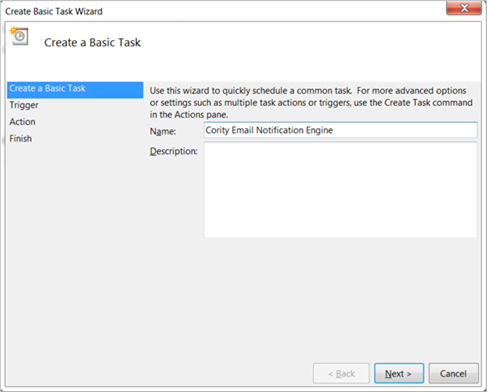
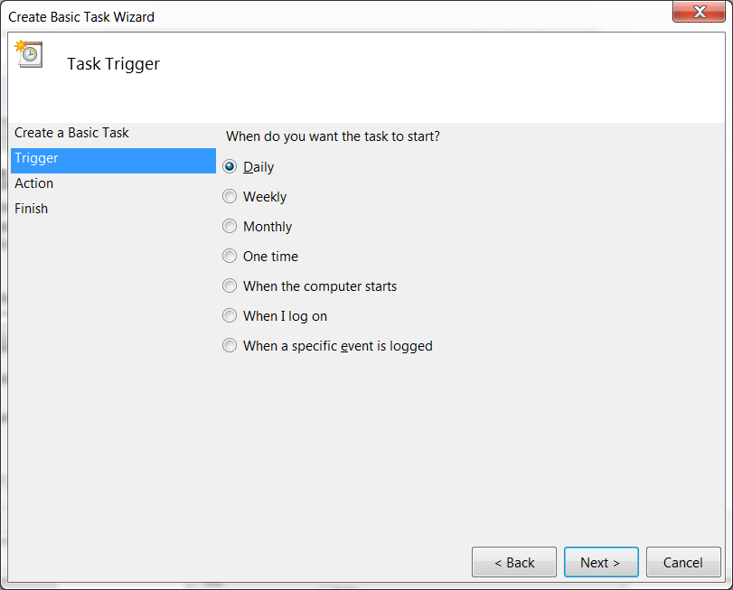
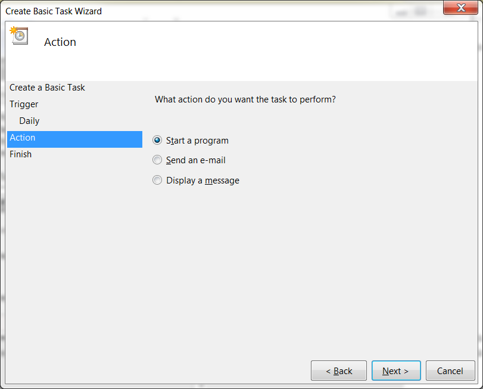
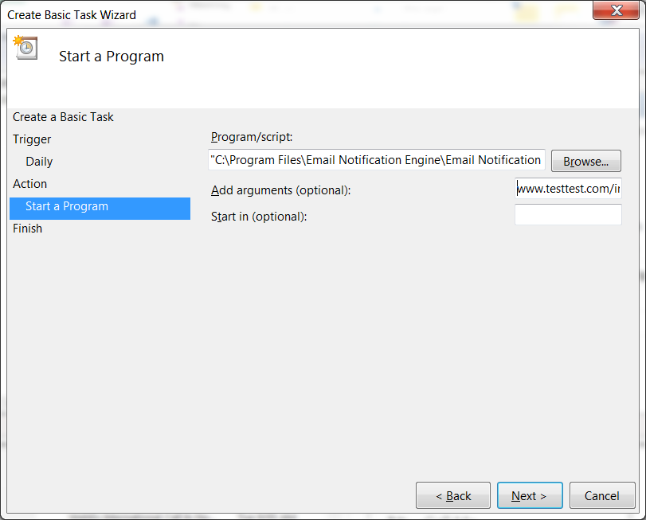

Important: If you have updated the Email Notification Utility web client from GX2t or earlier to GX2u or later, you must update the Program/Script field of your scheduled task to reference the new executable filename (.exe), because that filename changed.
Select Create Basic Task. The Create Basic Task Wizard will open.
Enter a name and description (optional) for the task.

Click Next.
Select when you want the task to start.

Click Next.
If you selected Daily, Weekly, Monthly, or One time in the Trigger step, select a start date and time and specify when you want future tasks to run, if applicable. Click Next.
If you selected ‘When a specific event is logged’ in the Trigger step, select a Log and Source and enter an Event ID. Click Next.
In the Action step, select Start a program.

In the Start a Program step, click the Browse… button next to the Program/script field. Select the ‘EmailNotificationUtility.exe’ file. Enter the hostname and virtual directory of your Cority instance in the Add arguments field (e.g., www.testtest.com/internal/Cority).

Click Next. Review your settings and click Finish to create your Email Notification Utility task. The Windows Task Scheduler will automatically start Email Notification Utility per your specifications.